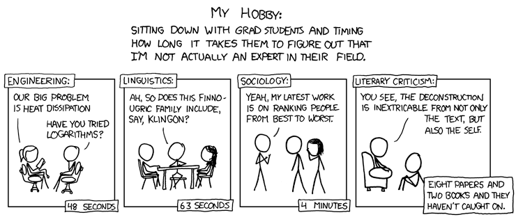
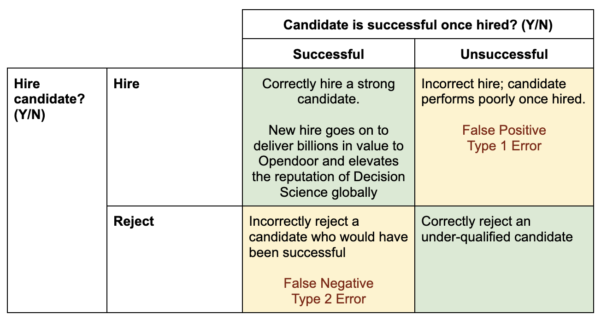
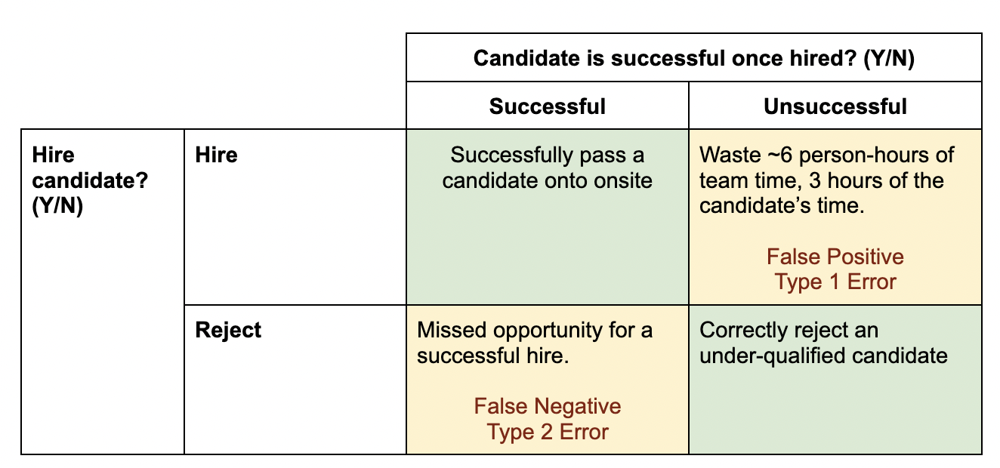

My qualifications
- Conducted 144 interviews in 2022
- Assuming 0.75 hours per interview on average (accounting for feedback, etc), that makes me about 9,900 hours short of the 10k hour rule. If Malcolm Gladwell knew I existed he would tell me to sit down.
Intro
As decision scientists, a decent part of our job can be best described as “throw math at parts of the business and see if value comes out.” In general, recruiting is an under-mathed part of the company. Today, I want to talk about 2 of my favorite concepts at the intersection of stats and recruiting: maximizing signal and asymmetric hiring risk.
What an interview isn’t.
A vibe check. In the absence of good principles, any non-technical interview quickly devolves into a vibe check. An unprincipled technical interview takes only marginally longer.
Studies show we end up optimizing for candidates that are similar in style to us. “These traits and thinking styles made me successful. Naturally this would make others successful in this role as well.” Absent conscious effort to avoid this bias, Dmitri would hire people with technical backgrounds and a good taste for fonts.
This style of interview is also much more easily targeted via bullshitting, personality, and pure practice.

What an interview should be (in 2 steps).
It’s actually super simple. For each interview, you just need to do 2 things:
- Maximize the signal you get about the candidate.
- Use that signal to make a calibrated choice about whether to move the candidate forward.
Let’s unpack those one at a time.
Maximizing Signal
It’s good to walk into every meeting with a purpose. Bias aside, we tend to make a judgment on candidates in the first 5 minutes before proceeding to mechanically run through the rest of the interview. This habit makes sense for how we normally approach the universe - doing analysis takes work. Eventually we’re so tied to our heuristics that you have a hunch about the interview before it even starts. But what’s the point of a 30 minute interview if you only use the first 5 minutes?
I’ll posit that the way to overcome this bias is to set an intermediate goal in the interview. Before you make a 1/2/3/4 decision - take advantage of your time to maximize the signal on the likelihood of a candidate’s success.
Probing to failure
When you think about your typical interview, you imagine going through a uniform list of questions. This helps reduce bias between candidates - but limits the range of signal that you get for any one candidate. The solution is to ask the same set of “core interview segments” - but make the incremental questions within them incrementally easier or harder.
If anyone’s familiar with the GMAT, it makes for a great parallel for how you might run an interview. The GMAT is similar to a computerized version of the SAT. However, rather than giving everyone the same set of questions - it makes questions incrementally easier as the test goes on, resulting in a broader range of possible outcomes.

The way this should play out in an interview:
- If a candidate answers poorly - give them progressively more hints to try and nudge them to the solution. This allows the candidate to recover from a single poor answer, and reduces the number of failures from simply misunderstanding the question.
- If a candidate does well - probe to failure. Keep asking deeper questions to capture the depth of the candidate’s understanding.
- On technical questions - “How would you adjust your answer given X complicating factor?” “What’s the technical tradeoff between the 2 solutions you proposed?”
- On behavioral questions - instead of asking 6 different questions, ask 1-2 and probe into each. Why did they make a choice? What was the impact? This has the secondary effect of honing in on what the candidate actually contributed, over how polished their story is.
Making a calibrated call: Asymmetric Risk
Good job, you’ve successfully extracted a few gallons of signal from your half-hour interview. How do you make a hiring decision? The lazy way would be to trust your gut. A smarter approach is going with some sort of rubric. But in any case - how do you calibrate the line of hire vs no hire?
To do this effectively, let’s consider the cost of getting it wrong. To keep this on-brand, let’s borrow some concepts from hypothesis testing.

Let’s start with the cost of rejecting a candidate that would have been successful if hired. The costs add up:
- The role stays unfilled longer - leaving the role under-supported for longer. This could be weeks or months.
- The time cost of interviewing. A personal estimate put our team at ~100 candidates interviewed per hire. Factoring in time spent on interviews + feedback, that’s ~250 hours per hire. Needless to say, rejecting candidates is expensive.
If we incorrectly hire a candidate that’s underqualified, the costs can add up to a lot more:
- The role is performed poorly. Maybe the results are worse than if they hadn’t been done at all.
- Loss of stakeholder trust. Bad deliverables can do that to you.
- Team morale. Takes a hit twice - first for having to work with a bad hire, next from a teammate leaving.
- Time to coach or manage out.
- Time to fill the role again from 0. Headcount is non-fungible.
The end result is asymmetric risk between incorrectly hiring and incorrectly rejecting. Accidentally hiring a bad candidate will generally be far more painful than missing out on someone that could have been a fit.
Upstream interviews
Asymmetric risk is most relevant for a hire / no hire decision, but the above framework works really well for upstream interviews as well. As an example, here’s how the framework looks for deciding whether to bring a candidate onsite.
